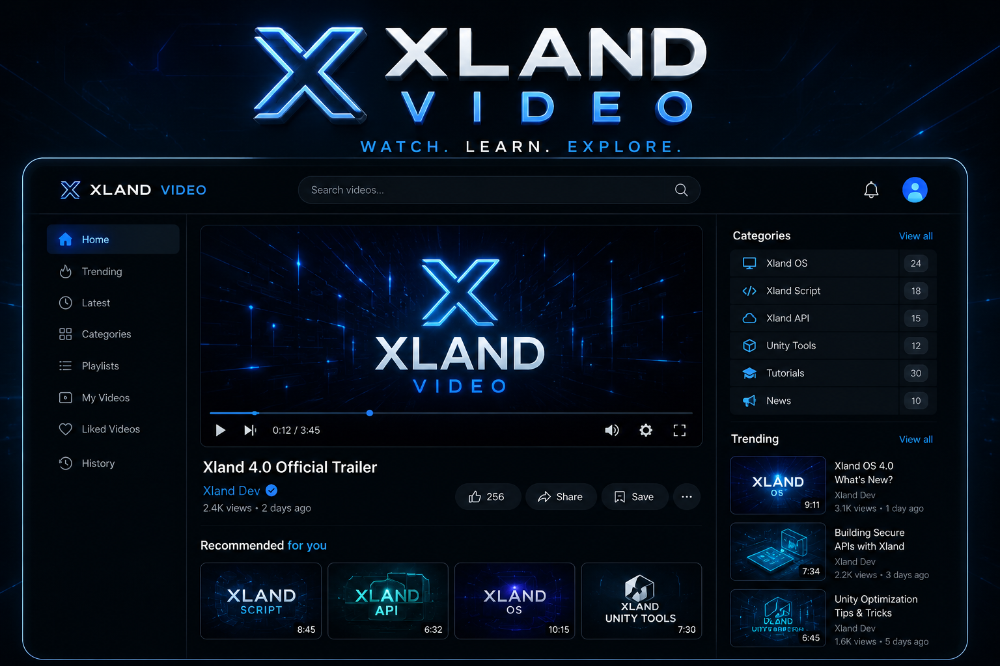
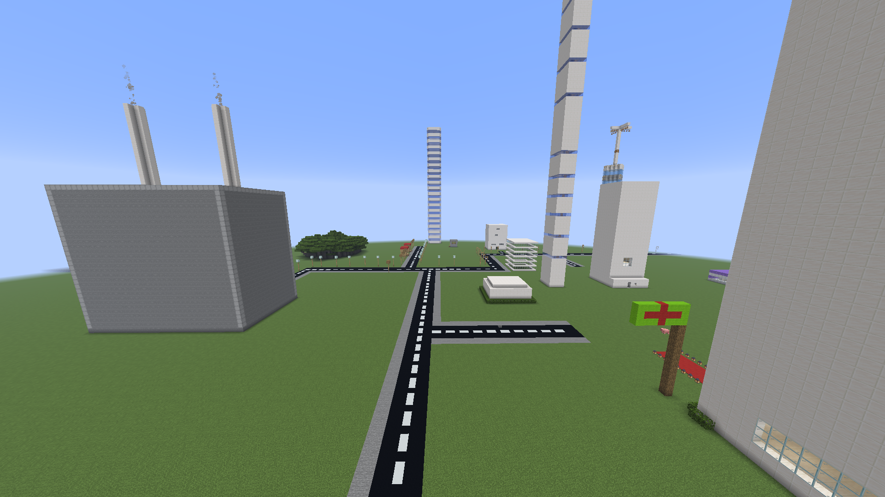

🚀 Welcome to XLAND Hub 6.2
XLAND Hub 6.2 is here!
The XLAND ecosystem continues to evolve with a new update focused on improving the homepage experience, introducing more useful AI-powered interactions and making it easier for visitors to explore XLAND services.
This release introduces ASK XLAND, improves the responsibilities of XLAND AI Copilot and brings further visual refinements to the main page.
Version 6.2 is focused on making XLAND Hub more organized, more accessible and more enjoyable to use.
🔥 What's New in XLAND Hub 6.2
This update focuses on the homepage experience and the way visitors interact with XLAND.
🚀 XLAND Hub 6.2 Highlights
- 🤖 Introduction of ASK XLAND
- 💬 A dedicated question-and-answer experience for visitors
- 🔎 Improved XLAND AI Copilot page discovery experience
- 🧠 Clear separation between ASK XLAND and AI Copilot responsibilities
- 🎨 Refined homepage visual design
- 💎 Improved colors, gradients and interface details
- 🔤 Enhanced typography and font presentation
- 💬 Visual improvements to the comments section
- 🔵 Introduction of blue accents alongside neon green
- 📱 Continued attention to responsive layouts
- ✨ Improved homepage organization and user experience
🤖 Introducing ASK XLAND
One of the main additions in XLAND Hub 6.2 is ASK XLAND — a dedicated question-and-answer experience designed for visitors.
ASK XLAND allows visitors to ask questions about the XLAND ecosystem and receive answers using its internal information and prepared knowledge base.
Its purpose is to help visitors understand XLAND, learn about its projects and get answers to common questions without turning the experience into a page-search tool.
🤖 ASK XLAND Features
- 💬 Dedicated question-and-answer interface
- ❓ Answers to common questions about XLAND
- 🌐 Information about the XLAND ecosystem
- 🧠 Internal answer database
- 🎨 Refined AI-inspired interface
- 🔤 Improved typography
- 📱 Responsive presentation
ASK XLAND has a specific responsibility: answering visitors' questions about XLAND.
It is designed as a separate experience from XLAND AI Copilot, helping keep the homepage AI tools more organized and easier to understand.
🔎 Improved XLAND AI Copilot
XLAND Hub 6.2 also improves the role of XLAND AI Copilot on the homepage.
Instead of duplicating the purpose of ASK XLAND, AI Copilot focuses on helping visitors discover pages, projects and services across the XLAND Hub.
🔎 XLAND AI Copilot Responsibilities
- 🔍 Finding XLAND pages
- 🌐 Discovering available services
- 🎮 Finding XLAND projects
- 📦 Helping visitors locate software and downloads
- 🧭 Improving navigation across the Hub
This update establishes two different roles for the homepage AI experiences.
🤖 Two AI Experiences — Different Responsibilities
- 🤖 ASK XLAND — Answers questions about XLAND
- 🔎 XLAND AI Copilot — Helps visitors find pages and services
By separating these responsibilities, XLAND Hub provides a clearer experience for visitors who need information or want to find something within the ecosystem.
🎨 A Refined XLAND Homepage
XLAND Hub 6.2 brings further visual improvements to the main homepage.
The goal is to create a more professional, modern and organized experience while preserving the recognizable XLAND visual identity.
The homepage continues to use a dark visual foundation, but now makes more balanced use of different accent colors and interface details.
💎 Homepage Improvements
- 🖤 Refined dark interface
- 🟢 Neon green visual accents
- 🔵 Blue and cyan interface details
- ✨ Improved gradients and visual effects
- 🎨 Better visual balance between homepage sections
- 🧩 More organized presentation of homepage features
- 💎 Refined AI component appearance
- 📱 Responsive design improvements
The update aims to make the homepage feel more consistent and professional without unnecessarily increasing visual complexity.
💬 Improved Comments Experience
The comments area also receives visual refinements as part of the XLAND Hub 6.2 homepage improvements.
The updated appearance introduces additional blue and cyan accents alongside the existing neon green visual language.
💬 Comments Section Improvements
- 🔵 Blue accent details
- 🟢 Neon green visual highlights
- ✨ Refined interface appearance
- 🎨 Improved color balance
- 📱 Responsive presentation
These changes help the comments area fit more naturally into the updated homepage design.
🔤 Improved Typography and AI Interface
XLAND Hub 6.2 also focuses on the presentation of text and interface elements.
The ASK XLAND interface receives an updated typographic style designed to create a cleaner and more modern appearance.
🔤 Typography Improvements
- 🔤 More refined font presentation
- 🌐 Better visual distinction between Persian and English text
- ✨ Improved text hierarchy
- 💬 Cleaner question-and-answer presentation
- 📱 Better readability across screen sizes
🧠 A More Organized AI Experience
One of the important goals of XLAND Hub 6.2 is to make the homepage AI tools easier to understand.
Visitors can use ASK XLAND when they want answers about XLAND, while AI Copilot is intended to help them locate pages and services.
This separation helps avoid unnecessary overlap between the two tools and gives each one a clearer purpose.
⚡ Improving the Visitor Experience
XLAND Hub 6.2 continues improving the way visitors interact with the platform.
From discovering services to asking questions, the homepage is designed to make important information easier to access.
⚡ User Experience Goals
- 🧭 Easier navigation
- 🔎 Better page discovery
- 🤖 More focused AI interactions
- 💬 Improved visitor communication
- 🎨 More consistent interface design
- 📱 Better mobile presentation
🌎 The XLAND Ecosystem Continues
XLAND Hub 6.2 builds on the existing XLAND ecosystem. It does not replace the projects and services introduced in previous releases.
Existing applications, games, tools and services remain part of the wider XLAND vision as development continues across the ecosystem.
🌎 XLAND Ecosystem
- 🤖 XLAND AI
- 🤖 XLAND AI Copilot
- 🤖 ASK XLAND
- 🎮 XLAND Games
- 👻 Endless Road Horror 3D
- 🌎 XLAND Map
- 🎬 XLAND Video
- 📰 XLAND News
- 🛠️ XLAND Support
- 💻 XLAND Developer Tools
- 🌐 XLAND API
- 📜 XLAND Script
- 🛒 XLAND Shop
- 📶 XLAND WiFi Manager
- 📦 XLAND Downloads
- 🎮 XLAND Open World
🚀 From XLAND Hub 5.0 to 6.2
XLAND Hub continues evolving through major releases, with every update building on the work of previous versions.
📈 XLAND Hub Evolution
- 🚀 XLAND Hub 5.0 — Major ecosystem expansion
- 🤖 XLAND Hub 5.1 — XLAND AI integration and News improvements
- 📱 XLAND Hub 5.2 — Copilot, mobile improvements and Script redesign
- 🛡️ XLAND Hub 5.3 — Security improvements and redesigned comment experience
- 📦 XLAND Hub 6.1 — XLAND Downloads, dedicated WiFi Manager page and Open World game showcase
- 🤖 XLAND Hub 6.2 — ASK XLAND, improved AI Copilot experience and homepage visual refinements
🔮 What's Next?
XLAND Hub 6.2 represents another step in the continued development of the XLAND platform.
Future improvements will depend on the development of individual XLAND projects and services.
🚀 The Road Ahead
- 🤖 Continued development of XLAND AI experiences
- 🌐 More improvements across XLAND services
- 🎮 Continued game development
- 📦 More XLAND-developed applications
- 🛠️ Further developer tools
- ✨ Continued homepage improvements
🎉 XLAND Hub 6.2 Is Here
XLAND Hub 6.2 marks an important step in the evolution of the XLAND ecosystem.
With the introduction of ASK XLAND, a more focused AI Copilot experience, improved homepage visuals and refinements to the comments interface, this release makes the Hub more organized and easier to explore.
XLAND Hub continues bringing projects, applications, services and new experiences together in one place.

📸 Gallery




📰 Related News

👤 Written by
XLAND Team
Official developers of the XLAND ecosystem.
💬 Comments (0)